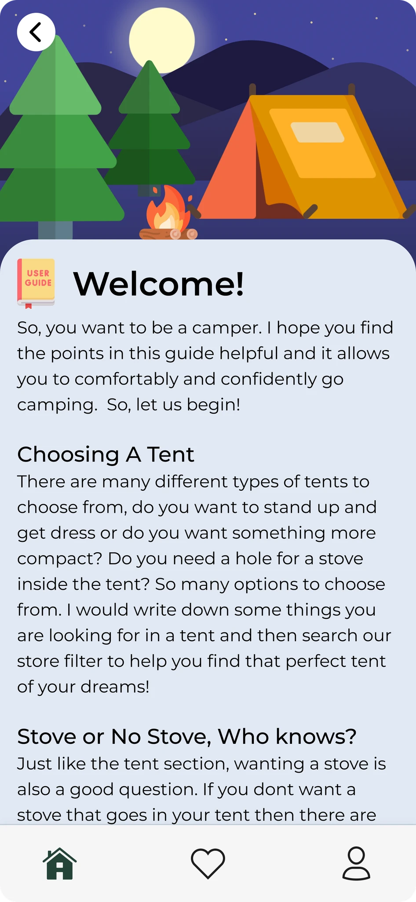
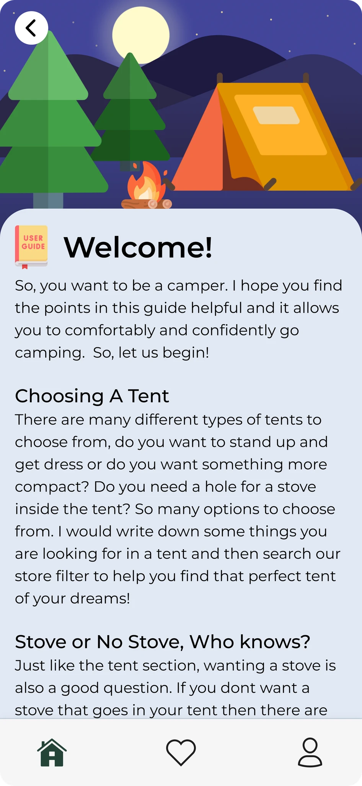

Campery was my Master's portfolio project to create something from the ground up that interested me
UI Designer Interaction design, Prototyping, Wireframing, Layout Design, Design Systems
My goal was to create something that helped forgetful campers to remember items and recommend places to go and try camping at for more of an adventure
Users wanted a way to keep track of their camping needs, thus Campery was born. I proceeded to conduct user research, create wireframes, craft low to high fidelity mockups, and prototype the product to ensure stellar user experience
Problems: Users want an all in one app to keep better track of their camping trips so that they feel assured that they are getting the best deals and the best camping spots.